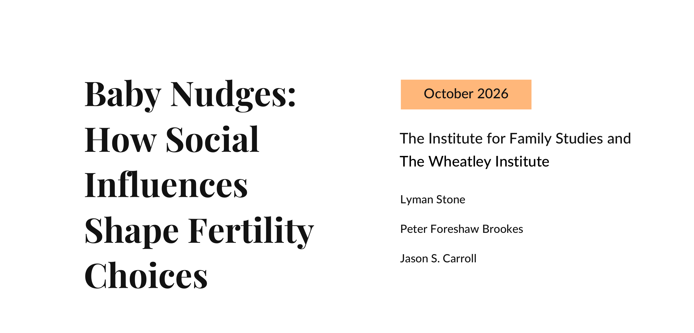
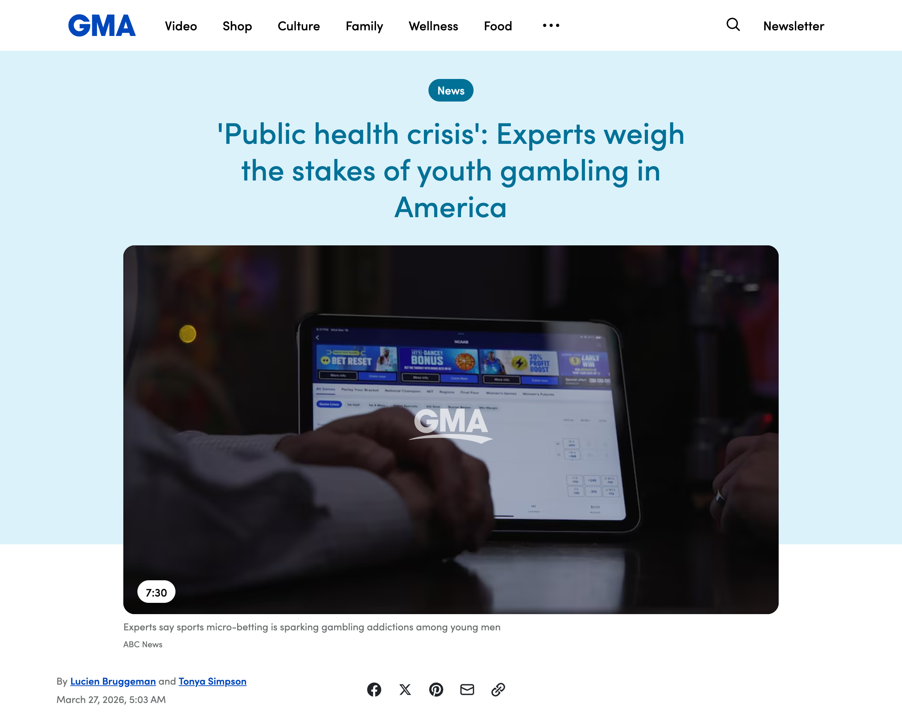

Contents
Every claim here comes from Cor, 658 graded findings from 159 studies and books on what humans need.
-
 1
1Bassist Marcelo Perez Schneider faked his playing for decades, but nobody can be the best when they're up against every bassist on the planet.
Ultimate Guitar, 28 Oct 2026
-
 2
2AI does work twice as fast, but the modern world never runs out of work.
PR Newswire (news release provided by ActivTrak), 29 Oct 2026
-

3Governments are nudging people to have babies, but nobody wants kids they'd have to raise alone.
Institute for Family Studies and The Wheatley Institute (report, PDF), October 2026
-
 4
4Herasight scores embryos for depression risk, but whichever embryo you pick grows up in the same lonely, sleepless world that sets it off.
Herasight (Substack), 2 Nov 2026
-
 5
5Hugh Hefner kept three girlfriends and twice-weekly orgies into old age, but he was after status, and the orgies stopped once E! gave him millions of viewers.
Entertainment Weekly, 8 May 2026
-
 6
6Mothers go back to work while still nursing their babies, but a baby still needs its mother all day, whatever the leave policy says.
Reddit, r/newborns, 5 Nov 2026
-
 7
7Nirva sells a $200 necklace that tracks who drains you, but your gut already measures exactly that: who takes more than they give.
Tom's Guide, 10 Jan 2026
-

8Teens are betting on sports apps, but one lucky bet pays more than two days of work, and the apps are built so it doesn't.
Good Morning America (ABC News), 27 Mar 2026
-
A photo of a performer on stage, shared with no caption, name or link
9A pop star's stage split goes viral, but it makes men feel wanted and women feel outdone, and the music business cashes in on both.
What really is a photo of a split on stage?
-
 10
10One in four teens never exercises, but nobody moves for a WHO target; people move when there's somewhere real to go.
Euronews, 4 Nov 2026